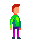

Cos'e'?
“Terry the worker” e’ un videogioco platform a scorrimento orizzontale nel quale l’utente riveste i panni di Terry,
un lavoratore che dopo un incidente sul luogo di lavoro dovra’ superare una serie di ostacoli e prove per salvarsi.
Il gioco ha come tema principale la sicurezza sul lavoro, e ha come compito primario istruire il giocatore sulle adeguate misure di sicurezza da adottare
in un ambiente lavorativo. L’utente infatti potra’ acquisire vari oggetti durante l’esperienza di gioco che amplieranno la sua conoscenza sui
dispositivi di protezione adatti.
